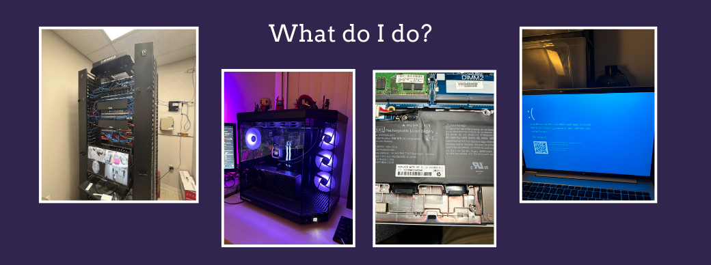

Experience

I have been an IT professional for 2 years, but I have a lifetime (22 years) of deep fascination with computers under my belt. I am the main helpdesk contact for a company of around 300-500 employees, where I do just about anything you could think an IT person does. I've handled tickets ranging from tier I to tier III, set up and implemented corporate networks, and investigated security breaches such as compromised accounts. Oh, and I am the one that creates and terminates users. Going into this role, I thought I knew a lot about computers; it turns out I didn't. I have learned more in the past two years in this role than I ever could have in any university or online course. The rapid expansion of knowledge has led me to spend the past two years learning on my own. I made the decision to re-enroll in a university to pursue cybersecurity, a field that has particularly captured my interest in my IT experience, and I am delighted that I chose this path. I have dedicated numerous hours to studying on HackTheBox and TryHackMe, and the experience has been immensely enjoyable. I am eager to explore the potential of this field in the future!
At my current role as a Helpdesk Technician, I have developed comprehensive expertise within a Microsoft-centric environment. I am proficient in managing Microsoft tenants and utilizing the full suite of administrative tools, including Microsoft Azure Active Directory and Exchange Admin Center. My responsibilities include managing and maintaining network infrastructure—such as routers, switches, and firewalls—while also administering system backups, data recovery, and policy management. I excel in troubleshooting hardware and software issues across a broad spectrum of technologies, resolving tickets from Tier I to Tier III. Additionally, I leverage advanced cybersecurity solutions, such as CrowdStrike Falcon, to enhance organizational security, and I have experience delivering end-user training to promote best practices in cybersecurity. My role has also given me substantial exposure to Active Directory, Nutanix, Linux, SQL, and scripting with Python and PowerShell, all of which contribute to maintaining and securing IT environments.